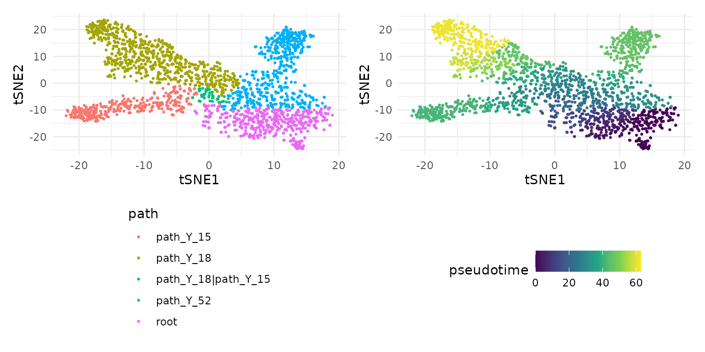
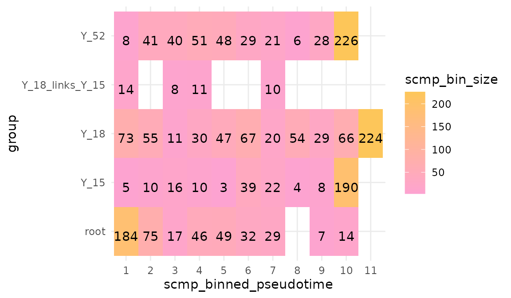
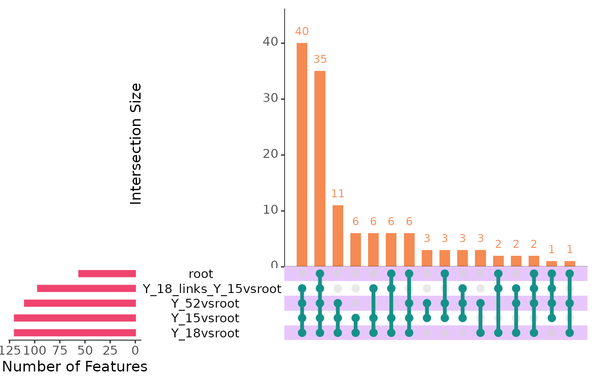
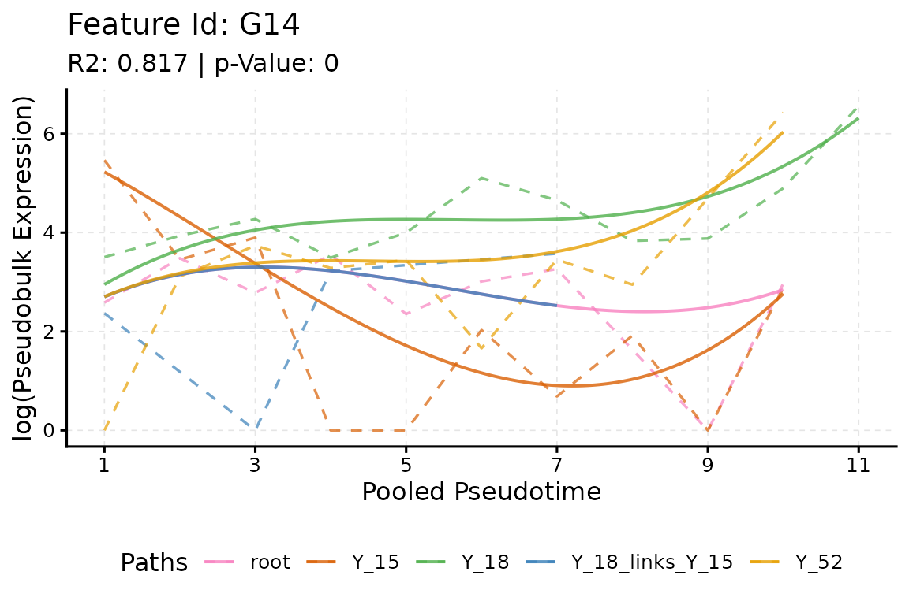
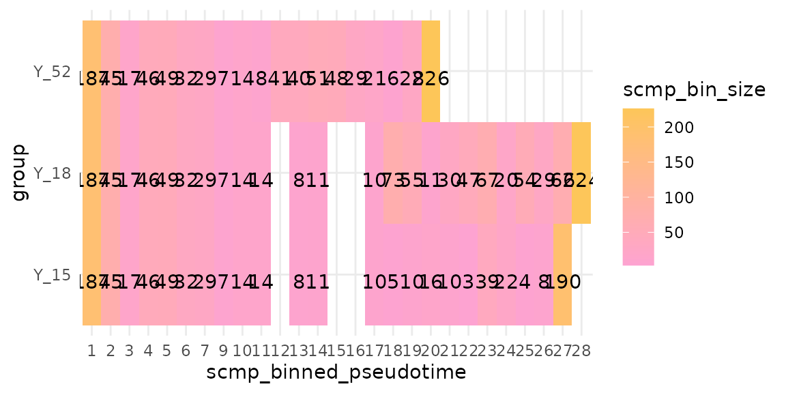
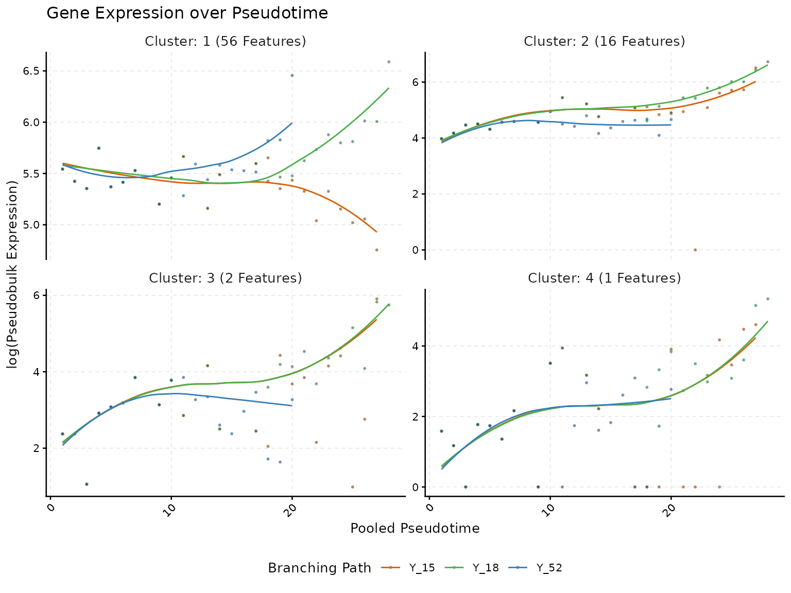

Abstract
In most trajectories the paths share their first cells: a root, and sometimes a segment that several later paths share, a link. This vignette analyses such a trajectory in two ways, with each segment as a path of its own and with the root and the link added to the paths that share them, and shows how the choice of the reference path shapes the results.
Root, link and end paths
multi.lin.sce is a simulated trajectory with three end
points, made with dyntoy for the benchmarks of tradeSeq (Saelens et al. 2019; Van den Berge et al. 2020)
and analysed with Monocle3 (Cao et al.
2019). Its cells carry a hard path label (group) and
the Monocle3 pseudotime (Monocle3_Pseudotime); the Trajectory
input vignette shows how to build such labels.
library(scMaSigPro)
library(SingleCellExperiment)
library(ggplot2)
data("multi.lin.sce", package = "scMaSigPro")
table(colData(multi.lin.sce)$group)
#>
#> path_Y_15 path_Y_18 path_Y_18|path_Y_15 path_Y_52
#> 307 676 43 498
#> root
#> 453
tsne <- as.data.frame(reducedDim(multi.lin.sce, "TSNE"))
colnames(tsne) <- c("tSNE1", "tSNE2")
tsne$path <- colData(multi.lin.sce)$group
tsne$pseudotime <- colData(multi.lin.sce)$Monocle3_Pseudotime
p_path <- ggplot(tsne, aes(tSNE1, tSNE2, colour = path)) +
geom_point(size = 0.5) +
theme_minimal() +
theme(legend.position = "bottom", legend.direction = "vertical")
p_time <- ggplot(tsne, aes(tSNE1, tSNE2, colour = pseudotime)) +
geom_point(size = 0.5) +
scale_colour_viridis_c() +
theme_minimal() +
theme(legend.position = "bottom")
patchwork::wrap_plots(p_path, p_time, ncol = 2)
The cells start in the root, which all three lineages
share. One lineage leads straight to the end path
path_Y_52; the other two first share a segment, the link
path_Y_18|path_Y_15, and then part into the end paths
path_Y_15 and path_Y_18. The pseudotime runs
from the root through each lineage; every lineage shares it.
The object
The labels are shortened first: the path_ prefix is
dropped and the link gets the separator _links_, the
default of sc.restruct(). To keep the vignette fast, the
analysis uses the first 200 of the 501 genes.
cell_data <- as.data.frame(colData(multi.lin.sce))
cell_data$group <- gsub("path_", "", cell_data$group, fixed = TRUE)
cell_data$group <- gsub("|", "_links_", cell_data$group, fixed = TRUE)
table(cell_data$group)
#>
#> root Y_15 Y_18 Y_18_links_Y_15 Y_52
#> 453 307 676 43 498
genes <- rownames(multi.lin.sce)[seq_len(200)]
scmp_ob <- create_scmp(
counts = counts(multi.lin.sce)[genes, ],
cell_data = cell_data,
ptime_col = "Monocle3_Pseudotime",
path_col = "group"
)Each segment as a path
The first way treats the root, the link and the three end paths as
five paths. sc.squeeze() bins each of them along its own
pseudotime, so the bins of every segment start at 1:
seg_ob <- sc.squeeze(scmp_ob)
plotBinTile(seg_ob)
The model then compares each segment with a reference segment. With
the root as the reference, the terms of every other segment describe how
it differs from the root, at the same binned pseudotime.
reference names it; without it, sc.set.poly()
takes the first path in C-locale (byte) order, here Y_15,
whose uppercase Y sorts before the lowercase r
of root.
seg_ob <- sc.set.poly(seg_ob, poly_degree = 3, reference = "root")
seg_ob <- sc.p.vector(seg_ob, verbose = FALSE)
seg_ob <- sc.t.fit(seg_ob, verbose = FALSE)
seg_ob <- sc.filter(seg_ob, rsq = 0.6, vars = "groups")
seg_res <- scmpResults(seg_ob)
seg_lists <- as.data.frame(seg_res[, grep("^sig_", colnames(seg_res))])
colSums(seg_lists)
#> sig_Y_15vsroot sig_Y_18vsroot sig_Y_18_links_Y_15vsroot
#> 120 120 97
#> sig_Y_52vsroot sig_root
#> 110 56sig_root holds the genes that change along the root, and
sig_Y_52vsroot, for example, the genes whose profile in
Y_52 differs from that in the root. The overlaps of the
lists sort the genes by the segments in which they differ from the
root:
plotIntersect(seg_ob)
For example, 17 genes differ from the root in all three end paths but not in the link: along these genes the link carries on the expression of the root, and the end paths leave it. One of them:
plotTrend(seg_ob, link_like_root[1], points = FALSE, lines = TRUE)
This view answers questions about the segments themselves, such as which genes the link turns on, but every segment starts again at binned pseudotime 1, so it does not follow a gene from the root to the end of a lineage.
The root and the link in every path
The second way follows each lineage from the start: the end path
Y_15 holds the bins of the root, then those of the link,
then its own, and so do Y_18 and Y_52 with the
segments on their way. sc.restruct() does this after
sc.squeeze(): it copies the bins of the root and of the
links into the end paths that share them, shifts the binned pseudotime
of the later bins to follow them, and computes the pseudo-bulk counts
again.
lin_ob <- sc.restruct(sc.squeeze(scmp_ob),
end_node_list = list("Y_15", "Y_18", "Y_52"),
root_node = "root",
link_node_list = list("Y_18_links_Y_15"),
verbose = FALSE
)
plotBinTile(lin_ob)
The end paths now share their first bins, and the model compares
whole lineages. sc.restruct() puts the paths in the order
of end_node_list, so Y_15 is the reference
unless reference names another:
lin_ob <- sc.set.poly(lin_ob, poly_degree = 3)
lin_ob <- sc.p.vector(lin_ob, verbose = FALSE)
lin_ob <- sc.t.fit(lin_ob, verbose = FALSE)
lin_ob <- sc.filter(lin_ob, rsq = 0.6, vars = "groups")
lin_res <- scmpResults(lin_ob)
colSums(as.data.frame(lin_res[, grep("^sig_", colnames(lin_res))]))
#> sig_Y_18vsY_15 sig_Y_52vsY_15 sig_Y_15
#> 54 64 72
lin_ob <- sc.cluster.trend(lin_ob, geneSet = "union", k = 4)
plotTrendCluster(lin_ob, verbose = FALSE)
By hand
sc.restruct() handles a root, links and end paths. For
other shapes, build the bins by hand: take the bin table of
sc.squeeze() with cDense(), stack the bins of
the segments of each lineage with their binned pseudotime shifted, give
the stacked bins the label of the lineage in the path column, store the
table with cDense<- and compute the pseudo-bulk counts
with pb_counts(). For this trajectory, the result is that
of sc.restruct():
bins <- cDense(sc.squeeze(scmp_ob))
stack_bins <- function(bins, segments, path) {
out <- NULL
shift <- 0
for (segment in segments) {
b <- bins[bins$group == segment, , drop = FALSE]
b$scmp_binned_pseudotime <- b$scmp_binned_pseudotime + shift
shift <- max(b$scmp_binned_pseudotime)
out <- rbind(out, b)
}
out$group <- path
rownames(out) <- paste(path, "bin", out$scmp_binned_pseudotime, sep = "_")
out
}
hand_ob <- sc.squeeze(scmp_ob)
cDense(hand_ob) <- rbind(
stack_bins(bins, c("root", "Y_18_links_Y_15", "Y_15"), "Y_15"),
stack_bins(bins, c("root", "Y_18_links_Y_15", "Y_18"), "Y_18"),
stack_bins(bins, c("root", "Y_52"), "Y_52")
)
#> 'value' has 66 bins instead of 44: the pseudo-bulk counts of the 'Dense' slot are removed; run pb_counts() to compute them for the new bins.
hand_ob <- pb_counts(hand_ob)
restruct_ob <- sc.restruct(sc.squeeze(scmp_ob),
end_node_list = list("Y_15", "Y_18", "Y_52"),
root_node = "root",
link_node_list = list("Y_18_links_Y_15"),
verbose = FALSE
)
identical(eDense(hand_ob), eDense(restruct_ob))
#> [1] TRUEChoosing the reference path
The dummies of the model compare every path with the reference path,
so the reference decides what the coefficients and the
"groups" lists of sc.filter() say: with
Y_15 as the reference, sig_Y_52vsY_15 lists
the genes whose profile in Y_52 differs from that in
Y_15. The full model is the same with any reference, only
written in other terms, so the p-values of sc.p.vector()
and its non-flat genes do not change, up to rounding. With
Y_52, the lineage that leaves the root on its own, as the
reference:
ref_ob <- sc.set.poly(lin_ob, poly_degree = 3, reference = "Y_52")
showPoly(ref_ob)
#> [1] "beta0 + beta1*Y_15vsY_52 + beta2*Y_18vsY_52 + beta3*scmp_binned_pseudotime + beta4*scmp_binned_pseudotimexY_15 + beta5*scmp_binned_pseudotimexY_18 + beta6*scmp_binned_pseudotime2 + beta7*scmp_binned_pseudotime2xY_15 + beta8*scmp_binned_pseudotime2xY_18 + beta9*scmp_binned_pseudotime3 + beta10*scmp_binned_pseudotime3xY_15 + beta11*scmp_binned_pseudotime3xY_18"
ref_ob <- sc.p.vector(ref_ob, verbose = FALSE)
all.equal(scmpResults(ref_ob)$p_value, lin_res$p_value)
#> [1] TRUE
identical(scmpResults(ref_ob)$non_flat, lin_res$non_flat)
#> [1] TRUE
ref_ob <- sc.t.fit(ref_ob, verbose = FALSE)
ref_ob <- sc.filter(ref_ob, rsq = 0.6, vars = "groups")
ref_res <- scmpResults(ref_ob)
colSums(as.data.frame(ref_res[, grep("^sig_", colnames(ref_res))]))
#> sig_Y_15vsY_52 sig_Y_18vsY_52 sig_Y_52
#> 70 66 72A good reference is the path the others are best described against:
the root when the segments are compared, a control or the most common
fate when lineages are compared. Without reference, the
first path is the first level of the path column when it is a factor,
and otherwise the first label in C-locale (byte) order, in every locale;
after sc.restruct(), the first path of
end_node_list. Naming the reference keeps an analysis the
same when the labels change.
Session information
sessionInfo()
#> R version 4.6.2 (2026-10-29)
#> Platform: x86_64-pc-linux-gnu
#> Running under: Ubuntu 24.04.5 LTS
#>
#> Matrix products: default
#> BLAS: /usr/lib/x86_64-linux-gnu/openblas-pthread/libblas.so.3
#> LAPACK: /usr/lib/x86_64-linux-gnu/openblas-pthread/libopenblasp-r0.3.26.so; LAPACK version 3.12.0
#>
#> locale:
#> [1] LC_CTYPE=C.UTF-8 LC_NUMERIC=C LC_TIME=C.UTF-8
#> [4] LC_COLLATE=C.UTF-8 LC_MONETARY=C.UTF-8 LC_MESSAGES=C.UTF-8
#> [7] LC_PAPER=C.UTF-8 LC_NAME=C LC_ADDRESS=C
#> [10] LC_TELEPHONE=C LC_MEASUREMENT=C.UTF-8 LC_IDENTIFICATION=C
#>
#> time zone: UTC
#> tzcode source: system (glibc)
#>
#> attached base packages:
#> [1] stats4 stats graphics grDevices utils datasets methods
#> [8] base
#>
#> other attached packages:
#> [1] ggplot2_4.0.3 SingleCellExperiment_1.34.0
#> [3] SummarizedExperiment_1.42.0 Biobase_2.72.0
#> [5] GenomicRanges_1.64.0 Seqinfo_1.2.0
#> [7] IRanges_2.46.0 S4Vectors_0.50.3
#> [9] BiocGenerics_0.58.1 generics_0.1.4
#> [11] MatrixGenerics_1.24.0 matrixStats_1.5.0
#> [13] scMaSigPro_0.99.0 BiocStyle_2.40.0
#>
#> loaded via a namespace (and not attached):
#> [1] gtable_0.3.6 xfun_0.62 bslib_0.12.0
#> [4] lattice_0.23-1 vctrs_0.7.3 tools_4.6.2
#> [7] parallel_4.6.2 Matrix_1.7-6 RColorBrewer_1.1-3
#> [10] S7_0.2.2 desc_1.4.3 lifecycle_1.0.5
#> [13] compiler_4.6.2 farver_2.1.2 textshaping_1.0.5
#> [16] codetools_0.2-20 htmltools_0.5.9 sass_0.4.10
#> [19] yaml_2.3.12 pkgdown_2.2.1 pillar_1.11.1
#> [22] jquerylib_0.1.4 MASS_7.3-66 BiocParallel_1.46.0
#> [25] DelayedArray_0.38.2 cachem_1.1.0 abind_1.4-8
#> [28] nlme_3.1-171 digest_0.6.39 bookdown_0.48
#> [31] splines_4.6.2 labeling_0.4.3 fastmap_1.2.0
#> [34] grid_4.6.2 cli_3.6.6 SparseArray_1.12.3
#> [37] patchwork_1.3.2 S4Arrays_1.12.1 withr_3.0.3
#> [40] scales_1.4.0 rmarkdown_2.32 XVector_0.52.0
#> [43] otel_0.2.0 gridExtra_2.3.1 ragg_1.5.2
#> [46] evaluate_1.0.5 knitr_1.52 UpSetR_1.4.1
#> [49] viridisLite_0.4.3 mgcv_1.9-4 rlang_1.3.0
#> [52] Rcpp_1.1.2 glue_1.8.1 BiocManager_1.30.27
#> [55] jsonlite_2.0.0 R6_2.6.1 plyr_1.8.9
#> [58] systemfonts_1.3.2 fs_2.1.0